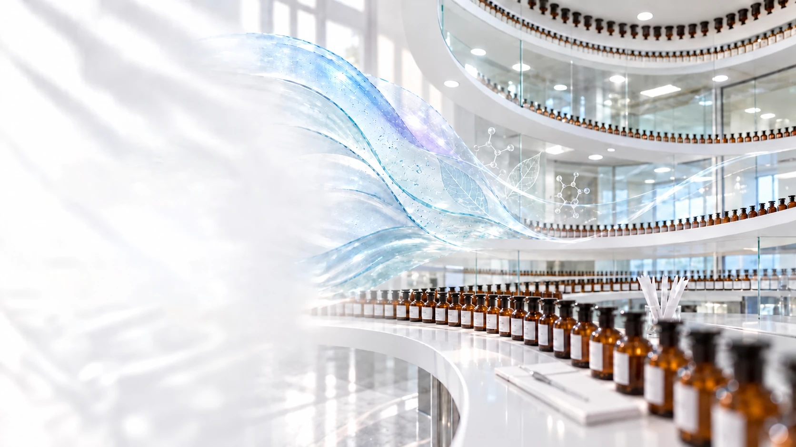
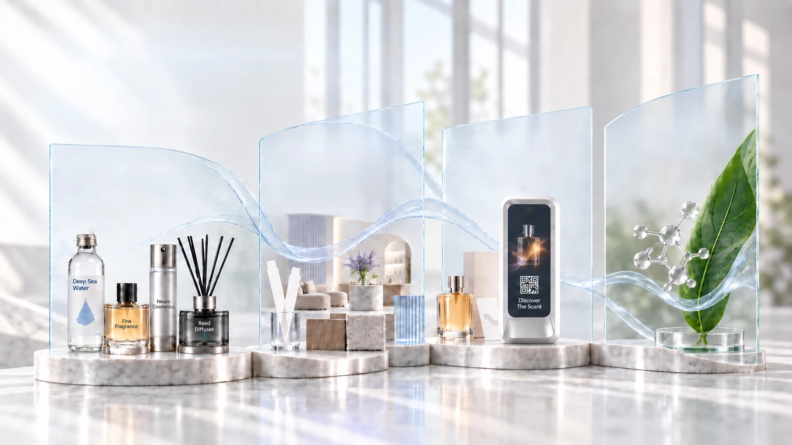
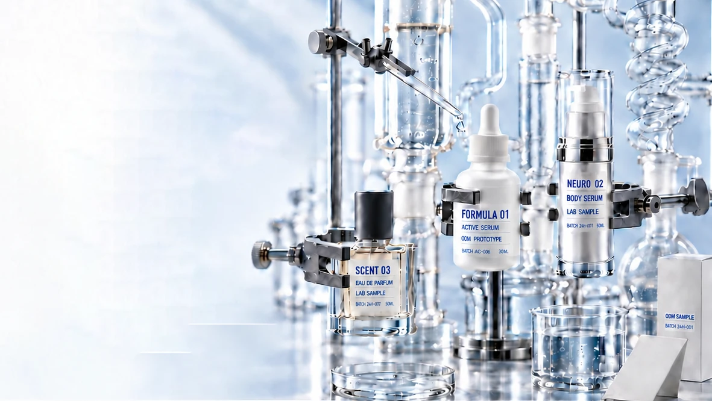
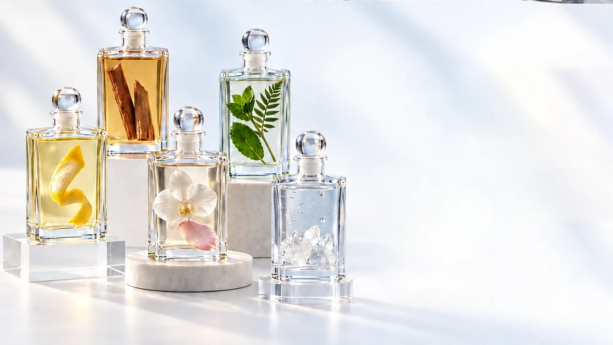
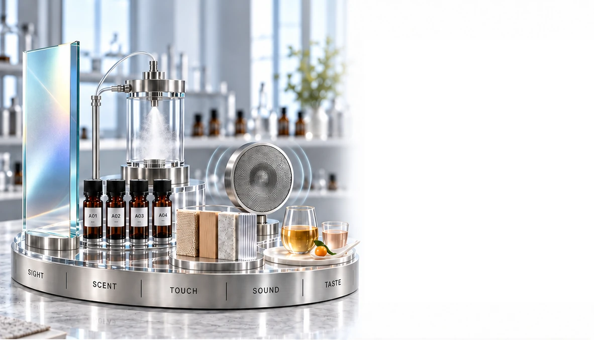
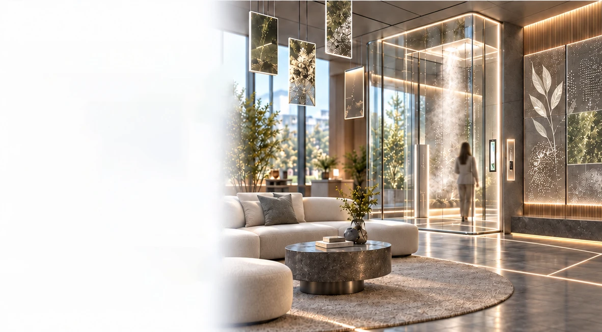
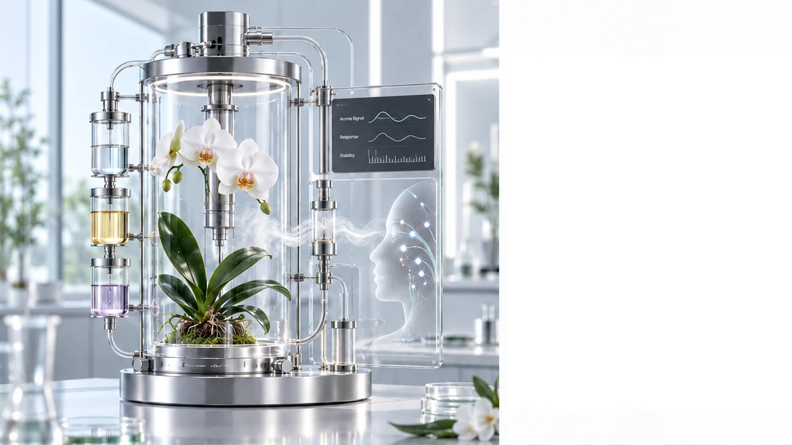
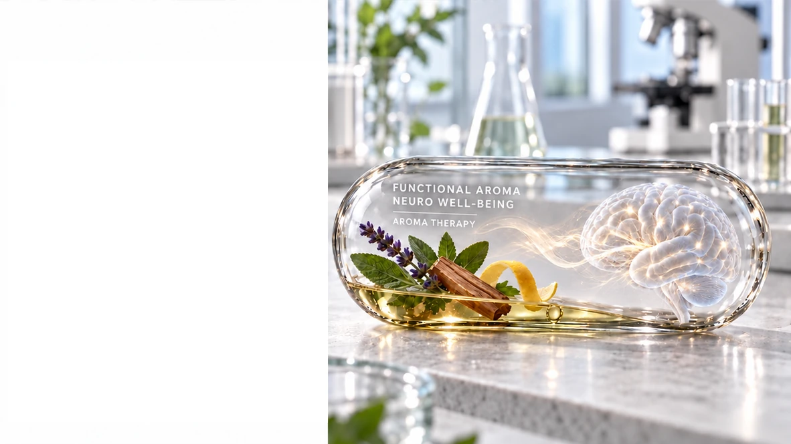
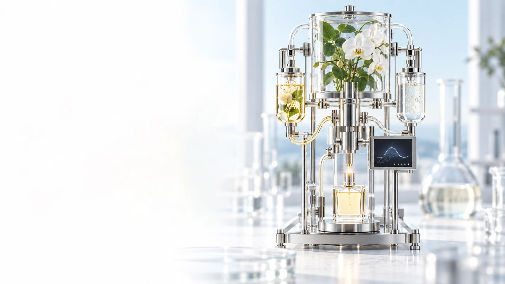

Co-Creation
Services
Bespoke Product · Sensory · Scent Solutions
From Insight to Market
We collaborate with brands to transform ideas into distinctive products, sensory experiences and scent-driven solutions.
What We Co-Create
Four Integrated Pathways from Concept to Market
Tailored development across product,
sensory, brand and functional innovation.


Product
Development & ODM
From Product Idea to Retail-Ready Reality
We translate your concept into a distinctive product designed for its intended market.
- Bespoke Formulation
- Product Format & Sensory Profile
- Packaging & Positioning Direction
- Prototype to Production Coordination

Fragrance Retail
Product Development
From Scent Concept to a Market-Ready Collection
We develop distinctive fragrance products that bring your brand’s scent direction into retail-ready formats.
- Fine Fragrance · Home Fragrance · Personal Scent
- Diffusers · Room & Linen Sprays
- Scent Formulation & Product Format
- Packaging Direction · Sampling · Production Coordination

Bespoke Sensory &
Scent Design
Creating a Distinctive Sensory Language for Your Brand
Sight · Scent · Touch · Sound · Taste
We combine sensory cues into one distinctive experience designed around your brand and audience.
- Visual Tone & Light · Aroma & Olfactory Direction · Texture & Material
- Sound & Taste · Integrated Experience Guidelines

Bringing Scent into
Everyday Life
From a Created Scent to a Lived Experience
We translate each scent into the places, products and rituals where people actually experience it.
- Arrival & Welcome · Rest, Focus & Recovery
- Personal & Home Rituals · Retail Touchpoints

Functional Scent
Innovation
Designing Scent with a Defined Purpose
We develop evidence-led scent concepts that move beyond pleasant aroma toward purposeful product and environmental experiences.
- Bio-Responsive Aroma Concepts
- Mood · Focus · Relaxation · Sleep Direction
- Active Aroma Ingredient & Evidence Review
- Product, Space & Prototype Application Design

From Functional Scent
to Real-World Use
Purpose-Designed for Products, Spaces and Daily Routines
We translate functional aroma concepts into practical formats, delivery systems and experiences designed around specific use moments.
- Personal Well-Being & Scented Therapy
- Skincare · Personal Care · Wearable Formats
- Focus · Relaxation · Recovery · Sleep Environments
- Delivery Profile · Prototype & Experience Evaluation

Let’s Co-Create
From Your Ambition to a Distinctive Market-Ready Experience
Bring us your product idea, sensory direction or functional goal. Together, we shape it into something clear, distinctive and ready to move forward.